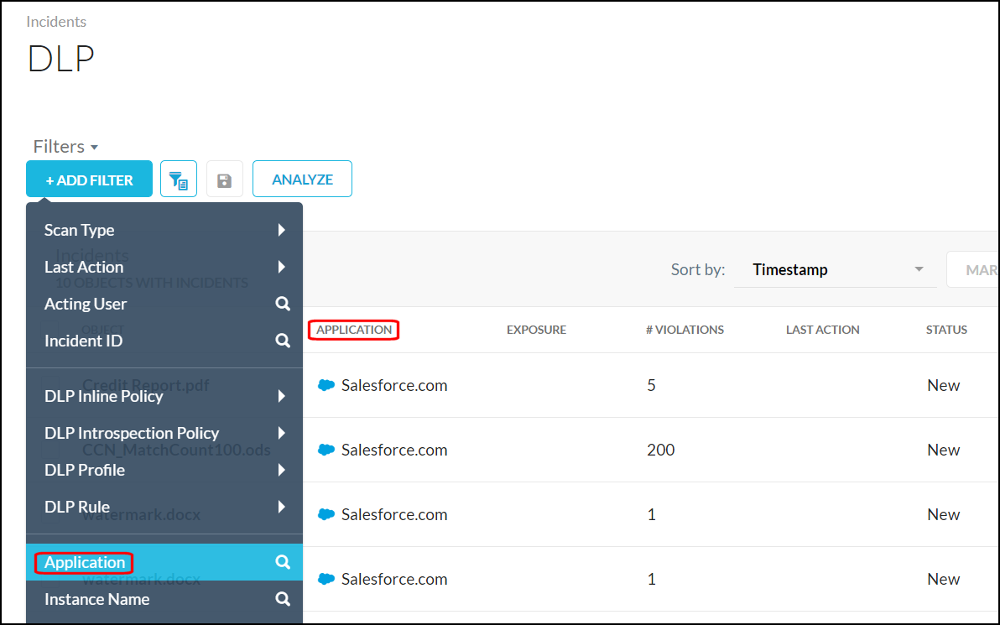
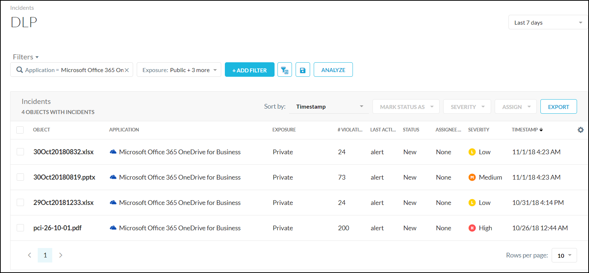

Incidents Interface
The Incidents pages have many similar components, but do differ some ways. For example, the Anomalies page has a Summary component like the other Incident pages, which shows data graphs and stats, but also has Details and Configure pages that help you manage anomalies, and has two types of search functions. The search functions on some of the Incident pages slightly differ as well.
Search Filters and Query Fields
The Incidents pages provide a couple of search options:
Predefined filters
Query search fields.
The search options vary depending on the Incidents page you're viewing. Only the DLP page has both types of search functions, and will be used to explained the search functions in the following sections.
Predefined Filters
Predefined filters allow you to find specific incidents shown on the page based on defined data. The columns you see on the page reflect the predefined filters available when you click on Add Filters.
|  |
Tip
To change the columns shown on the page, click the  and enable the columns you want to see.
and enable the columns you want to see.
Predefined filters have one of two adjacent symbols, the search icon  and the toggle arrow
and the toggle arrow  . When you select a filter with a search icon, that value is added to the search field so you can add more specifics.
. When you select a filter with a search icon, that value is added to the search field so you can add more specifics.
For example, if you select Application, enter the name of the application you want to find in the search field, like Microsoft. As you begin typing the name, a dropdown opens to show auto-complete options. Complete typing the search term or select an option from the dropdown list, and then click the Enter key.
 |
When a predefined filter has an adjacent toggle arrow, there are expanded options to choose from. For example, clicking the toggle beside Exposure allows you to choose one or more predefined options, or search of more options. When finished, click Apply.
 |
The search results display on the page.
|  |
Tip
To save this filter for later use, click the Save button.
 |
Expand the Filters dropdown list to use a saved filter.
 |
Query Search Fields
The DLP, Anomalies, Malware, and Malicious Sites Incidents pages, like the SkopeIT pages, enable you to use query language to fine-tune search results. To use query searches on the DLP page, click the Query Mode button.
 |
Tip
If you do not see this button, but do see a search field, search queries are supported on that Incidents page. If you only see the Filters icon , search queries are not supported on that Incidents page.
Query language search entries consists of simple terms, groups, and Boolean operators. A simple query has the form <field><op><value>, where:
appis the name of one of the Application fieldsopis one of:eq,=,==,neq,!=,like,~in case of string fields.eq,=,==,neq,!=,gt,>,gte,>=,lt,<,lte,<=, and,in case of numeric fields.
valueis a string or numeric value.
It can also be field from value1 to value2, for example, user from aaa to zzz, or timestamp from 1607990400 to 1610158997 (in Epoch Time format).
Simple terms can be combined with Boolean operators. For example: field1 eq value1 and field2 lte value2, not (field1 eq value1), field1 eq value1 or not (field2 lte value2).
Terms can be grouped by using parenthesis around them to override precedence. For example: (field1 eq value1 or field2 eq value2) and (field3 eq value3).
Operators
"eq"or"="or"=="- The Equal To operator compares the field with value. This operator does a case sensitive comparison."neq"or"!="- The Not Equal To operator returns all events where the field does not equal to the value. This operator does a case sensitive comparison."gt"or">"- The Greater Than operator works only on numeric fields such as count."lt"or"<"- The Less Than operator works only on numeric fields such as count."lte"or"gte"- The Greater Than Equal To or Less Than Equal To operators are also available for comparison."not"- The Not operator negates the result of the expression to the right. For example,"not (count = 0)".“like”or“~”– The 'like' operator is used to list all the events that contains the specified pattern in the field. For example, a user like John would match for john@abc.com or John@xyz.com or brjohn. The 'like' operator is not case sensitive.Note
The
"like"or"~"operator is performance intensive. It's recommended to use this operator only while searching for events that contains a specified string.
When using query language, keep in mind the date ranges for your searches. Increasing the date range may improve your search results. To change the date range, use the dropdown list in the top right corner of the page.
Incident Query Language Search Examples
Similar to predefined filters searches, as you enter text in the search field, supported queries appear in a dropdown list to help you complete the query string. If the search field has a red border, the query string is not finding any results.
To help you find specific incidents, here's some examples of helpful search queries:
Purpose | Query |
|---|---|
Are there any anomalies in our cloud storage apps? (Anomalies page) |
|
Have any upload anomalies occurred? (Anomalies page) |
|
Has any malware, specifically viruses, been detected? (Malware page) |
|
Has a specific user encountered malware? (Malware page) |
|
Are there any objects in my network with critical severity? (DLP page) |
|
Have there been any DLP incidents that created an alert? (DLP page) |
|